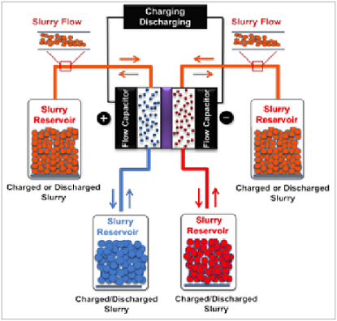

June 15th, 2012 - A new paper on a new energy storage concept (Electrochemical flow capacitors) has been published in Advanced Energy Materials
ECSL team in collaboration with Drexel Nano Materials Group has published a new paper on a new energy storage concept titled: "The electrochemical flow capacitor: A new concept for rapid energy storage and recovery" in Advanced Energy Materials.
Abstract:
Availability on grid-scale electric energy storage systems with response rates on the order of seconds plays a key role in wide implementation of renewable energy sources. Here, a new concept called the electrochemical flow capacitor (EFC) is presented. This new concept shares the major advantages of both supercapacitors and flow batteries, providing rapid charging/discharging while enabling the decoupling of the power and energy ratings. Like in supercapacitors, energy is stored in the electric double layer of charged carbon particles. A flowable carbon-electrolyte mixture is employed as the active material for capacitive energy storage, and is handled in a similar fashion to flow or semi-solid batteries (i.e., for charging/discharging, it is pumped into an electrochemical cell, and for storage, it's pumped into reservoirs). This study presents the proof-of-concept of this technology and reports initial EFC performance data obtained under static and intermittent flow operations.